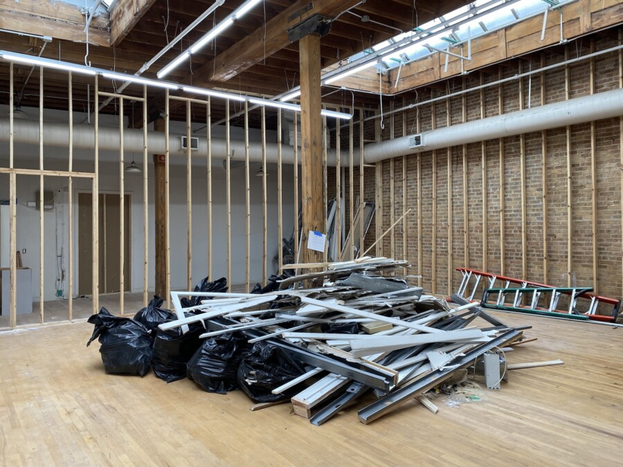

Ethical Managers Make Their Own Rules
The exhibition supports the exhibition and vice versa, you know? I think it’s a reflex. It’s a gift to write something and say nothing, and vice versa. So much, so little, and so on. Does that mean what I think it does? I mean, it is mean.
Display can be a descriptive and effacing presence, you know. Affirmative. When I place this here, is it any different than if I placed it there? Okay, now what if you placed it? Not this, that. I’ll pick this up and move it, but I’m afraid nothing will change. It’s only as meaningful as the surface it butts up against. The walls touch the floor and only sometimes the ceiling, which feels important. Eyes up here.
At the end of each year we destroy whichever wall has the most holes in it. Like day old bread and gypsum board, context is everything!
No big words and only a few small ones, please. Less of both in general. Checks, balances, and gradients from gray to grey. Equilibrium is not as delicate as they make it out to be. If you fade into the background ever so slightly, it becomes much easier to skirt responsibility. All decisions are made back here anyway. Influence/influenza. And look how well that worked out for you.
New word: plataphorism. Platitude, aphorism, you know? They’re all I’ve been saying lately. Let everything speak for itself even if it has nothing to say. Grayrea. Greydient. The sins of whose father? The holes in your brain and the gaps in your knowledge can be filled with new words if you just make them up.
I once wrote a poem and I twice crossed it out. Stop me if you’ve heard this one before.
When you said display, what did you mean? I didn’t ask but maybe that’s the problem. It’s gray in every corner but nothing’s been flattened. Stretched out but not stretched thin, it’s still sharp and I’m sorry but there’s no end in sight. Clearer than ever, really. You could live here if you felt so compelled.
You’ll have to reenter under different circumstances next time and maybe then you’ll be surprised. Take it all in and don’t get too close. I mean, look around! I could tell you more but what’s the fun in explaining something we both already know, you know? We’re living it.